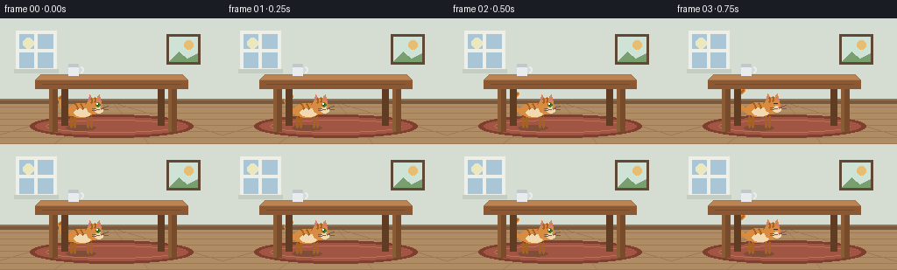
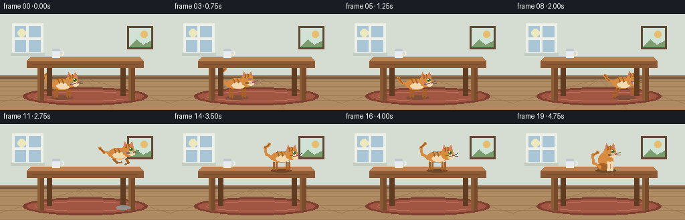

CODING AGENTS AS PIXEL WORLD MODELS
traex/Seed-2.1-Pro-0915 · dynamic_spatial_relationship_0014
点击播放 · 原生 RGB 像素
逐轮保存的候选
回放视频、检查图与代码变化。
每份候选均可单独播放。实际图片检查记录在下方工具轨迹中。
候选 01播放与检查图
点击播放 · 原生 RGB 像素


展开代码变化
--- 上一保存版本
+++ 本次保存版本
@@ -0,0 +1,278 @@
+"""Text-to-video generation: a cat under a table runs onto the table.
+
+Pure PIL/numpy procedural animation. Produces 20 RGB frames at 256x144, 4 fps.
+"""
+import math
+
+import numpy as np
+from PIL import Image, ImageDraw
+
+import artifact_io
+
+W, H, N, FPS = 256, 144, 20, 4.0
+
+# Palette
+WALL = (213, 221, 211)
+WALL_TRIM = (196, 205, 194)
+FLOOR = (176, 140, 100)
+FLOOR_LINE = (158, 122, 86)
+BASEBOARD = (122, 90, 60)
+RUG = (160, 86, 66)
+RUG_BORDER = (126, 62, 48)
+WOOD_TOP = (171, 116, 68)
+WOOD_TOP_EDGE = (188, 132, 82)
+WOOD_FRONT = (138, 88, 50)
+WOOD_LEG = (120, 76, 42)
+WOOD_LEG_BACK = (96, 60, 34)
+CAT_BODY = (217, 140, 63)
+CAT_DARK = (166, 98, 38)
+CAT_LIGHT = (242, 217, 176)
+CAT_EYE = (72, 120, 58)
+NOSE = (214, 120, 120)
+
+
+def lerp(a, b, t):
+ return a + (b - a) * t
+
+
+def draw_background(draw):
+ # Wall and floor
+ draw.rectangle([0, 0, W, 96], fill=WALL)
+ draw.rectangle([0, 96, W, H], fill=FLOOR)
+ # Floorboards
+ for y in range(101, H, 7):
+ draw.line([(0, y), (W, y)], fill=FLOOR_LINE, width=1)
+ for x in (-40, 60, 170, 290):
+ draw.line([(128, 96), (x, H)], fill=FLOOR_LINE, width=1)
+ # Baseboard
+ draw.rectangle([0, 92, W, 97], fill=BASEBOARD)
+ draw.rectangle([0, 92, W, 93], fill=(150, 114, 80))
+
+ # Window
+ draw.rectangle([18, 14, 64, 60], fill=(238, 240, 232))
+ draw.rectangle([22, 18, 60, 56], fill=(168, 198, 214))
+ draw.ellipse([26, 22, 38, 34], fill=(235, 232, 190)) # soft sun
+ draw.rectangle([39, 18, 42, 56], fill=(238, 240, 232))
+ draw.rectangle([22, 35, 60, 38], fill=(238, 240, 232))
+ draw.rectangle([16, 58, 66, 62], fill=WALL_TRIM)
+
+ # Framed picture
+ draw.rectangle([190, 18, 228, 52], fill=(96, 72, 52))
+ draw.rectangle([193, 21, 225, 49], fill=(206, 226, 214))
+ draw.ellipse([210, 25, 220, 35], fill=(232, 190, 110))
+ draw.polygon([(193, 49), (204, 38), (213, 46), (225, 40), (225, 49)], fill=(120, 160, 110))
+
+
+def draw_rug(draw):
+ draw.ellipse([34, 110, 220, 136], fill=RUG_BORDER)
+ draw.ellipse([40, 113, 214, 133], fill=RUG)
+ draw.ellipse([52, 116, 202, 130], outline=(188, 112, 88), width=1)
+
+
+def draw_table(draw):
+ # Back legs (darker, slightly inset)
+ draw.rectangle([70, 78, 77, 122], fill=WOOD_LEG_BACK)
+ draw.rectangle([180, 78, 187, 122], fill=WOOD_LEG_BACK)
+ # Front legs
+ draw.rectangle([56, 78, 65, 129], fill=WOOD_LEG)
+ draw.rectangle([192, 78, 201, 129], fill=WOOD_LEG)
+ draw.rectangle([56, 78, 59, 129], fill=(138, 92, 54))
+ draw.rectangle([192, 78, 195, 129], fill=(138, 92, 54))
+ # Tabletop: top face with slight perspective
+ draw.polygon([(46, 64), (208, 64), (214, 70), (40, 70)], fill=WOOD_TOP_EDGE)
+ draw.polygon([(40, 70), (214, 70), (214, 80), (40, 80)], fill=WOOD_FRONT)
+ draw.line([(46, 64), (208, 64), (214, 70), (40, 70), (46, 64)], fill=WOOD_TOP, width=1)
+ # Wood grain hint on the front apron
+ draw.line([(48, 75), (206, 75)], fill=(118, 74, 42), width=1)
+
+ # Cup on the far side of the table
+ cx = 84
+ draw.rectangle([cx - 6, 52, cx + 5, 65], fill=(232, 236, 238))
+ draw.arc([cx + 4, 55, cx + 11, 62], start=-90, end=90, fill=(232, 236, 238), width=2)
+ draw.rectangle([cx - 6, 52, cx + 5, 55], fill=(190, 200, 206))
+
+
+def thick_line(draw, pts, fill, width):
+ draw.line(pts, fill=fill, width=width, joint="curve")
+ r = width // 2
+ for x, y in pts:
+ draw.ellipse([x - r, y - r, x + r, y + r], fill=fill)
+
+
+def draw_cat(draw, cx, feet_y, mode, phase, t, blink=False):
+ """Draw a cat facing right. feet_y is the ground-contact y of the paws."""
+ # ---- shadow on the nearest supporting surface ----
+ if mode == "jump":
+ # Shadow stays on the floor while airborne, shrinking as the cat rises.
+ height = 124 - feet_y
+ k = max(0.0, 1.0 - height / 80.0)
+ sw = int(18 * (0.5 + 0.5 * k))
+ shade = int(120 + 100 * k)
+ draw.ellipse([184 - sw, 122, 184 + sw, 128], fill=(shade, shade, shade))
+ elif mode in ("walk", "land", "sit"):
+ draw.ellipse([cx - 15, 67, cx + 15, 72], fill=(110, 70, 40))
+ else:
+ draw.ellipse([cx - 17, feet_y - 2, cx + 17, feet_y + 4], fill=(126, 78, 56))
+
+ bob = 0.0
+ if mode == "idle":
+ bob = math.sin(t * math.pi * 2) * 0.8
+ elif mode in ("run", "walk"):
+ bob = -abs(math.sin(phase)) * 2.0
+
+ leg_h = 11
+ hip_y = feet_y - leg_h + bob
+ body_cy = hip_y - 8
+ body_w, body_h = 30, 16
+
+ if mode == "sit":
+ # Upright seated body
+ body_cy = feet_y - 14
+ draw.ellipse([cx - 11, body_cy - 12, cx + 11, body_cy + 12], fill=CAT_BODY)
+ # Haunch
+ draw.ellipse([cx - 13, feet_y - 9, cx + 4, feet_y + 1], fill=CAT_DARK)
+ # Front legs straight down
+ thick_line(draw, [(cx + 4, body_cy + 4), (cx + 4, feet_y)], CAT_LIGHT, 4)
+ thick_line(draw, [(cx + 9, body_cy + 4), (cx + 9, feet_y)], CAT_LIGHT, 4)
+ head_cx, head_cy = cx + 6, body_cy - 12
+ else:
+ # ---- legs ----
+ if mode in ("run", "walk"):
+ speed = 1.0 if mode == "run" else 0.6
+ for i, hx in enumerate((-11, -7, 8, 12)):
+ pair = 0 if i < 2 else 1
+ s = math.sin(phase + pair * math.pi) * speed
+ foot_x = cx + hx + s * 7
+ lift = max(0.0, math.sin(phase + pair * math.pi)) * 5
+ foot_y = feet_y - lift
+ thick_line(draw, [(cx + hx, hip_y), (foot_x, foot_y)], CAT_DARK, 3)
+ elif mode == "jump":
+ # Tucked legs
+ thick_line(draw, [(cx - 10, hip_y), (cx - 4, hip_y + 6), (cx + 2, hip_y + 5)], CAT_DARK, 3)
+ thick_line(draw, [(cx + 9, hip_y), (cx + 13, hip_y + 6), (cx + 8, hip_y + 8)], CAT_DARK, 3)
+ else: # idle / land
+ for hx in (-11, -7, 8, 12):
+ thick_line(draw, [(cx + hx, hip_y), (cx + hx, feet_y)], CAT_DARK, 3)
+
+ # ---- body ----
+ lean = -3 if mode in ("run", "jump") else 0
+ draw.ellipse(
+ [cx - body_w // 2 + lean, body_cy - body_h // 2,
+ cx + body_w // 2 + lean, body_cy + body_h // 2],
+ fill=CAT_BODY,
+ )
+ # Belly patch
+ draw.ellipse([cx - 8 + lean, body_cy - 2, cx + 12 + lean, body_cy + 7], fill=CAT_LIGHT)
+ # Body stripes
+ for sx in (-6, 0, 6):
+ thick_line(draw, [(cx + sx + lean, body_cy - 7), (cx + sx + 2 + lean, body_cy - 2)], CAT_DARK, 2)
+ head_cx, head_cy = cx + 15 + lean, body_cy - 5
+
+ # ---- tail ----
+ if mode == "sit":
+ tail_pts = [(cx - 9, feet_y - 4), (cx - 18, feet_y - 10),
+ (cx - 19, feet_y - 22), (cx - 12, feet_y - 26)]
+ elif mode == "jump":
+ tail_pts = [(cx - 14, body_cy), (cx - 24, body_cy - 2), (cx - 30, body_cy - 8)]
+ elif mode == "run":
+ wave = math.sin(phase * 0.8) * 3
+ tail_pts = [(cx - 14, body_cy), (cx - 23, body_cy - 2 + wave),
+ (cx - 29, body_cy - 9 + wave)]
+ else:
+ sway = math.sin(t * math.pi * 2) * 3
+ tail_pts = [(cx - 14, body_cy + 2), (cx - 22, body_cy - 4),
+ (cx - 24, body_cy - 14 + sway), (cx - 18, body_cy - 19 + sway)]
+ thick_line(draw, tail_pts, CAT_BODY, 4)
+ thick_line(draw, tail_pts[-2:], CAT_DARK, 2)
+
+ # ---- head ----
+ r = 9
+ draw.ellipse([head_cx - r, head_cy - r, head_cx + r, head_cy + r], fill=CAT_BODY)
+ # Ears
+ draw.polygon([(head_cx - 7, head_cy - 5), (head_cx - 5, head_cy - 13), (head_cx - 1, head_cy - 7)],
+ fill=CAT_BODY)
+ draw.polygon([(head_cx + 1, head_cy - 7), (head_cx + 6, head_cy - 13), (head_cx + 8, head_cy - 5)],
+ fill=CAT_BODY)
+ draw.polygon([(head_cx - 6, head_cy - 6), (head_cx - 5, head_cy - 11), (head_cx - 3, head_cy - 7)],
+ fill=NOSE)
+ draw.polygon([(head_cx + 4, head_cy - 7), (head_cx + 6, head_cy - 11), (head_cx + 7, head_cy - 6)],
+ fill=NOSE)
+ # Head stripes
+ thick_line(draw, [(head_cx - 3, head_cy - 8), (head_cx - 3, head_cy - 4)], CAT_DARK, 2)
+ thick_line(draw, [(head_cx + 1, head_cy - 9), (head_cx + 1, head_cy - 5)], CAT_DARK, 2)
+ # Muzzle
+ draw.ellipse([head_cx + 1, head_cy + 1, head_cx + 10, head_cy + 8], fill=CAT_LIGHT)
+ # Eye
+ if blink:
+ draw.line([(head_cx + 2, head_cy - 2), (head_cx + 6, head_cy - 2)], fill=(60, 40, 30), width=1)
+ else:
+ draw.ellipse([head_cx + 2, head_cy - 4, head_cx + 7, head_cy + 1], fill=CAT_EYE)
+ draw.ellipse([head_cx + 3, head_cy - 3, head_cx + 5, head_cy - 1], fill=(20, 30, 16))
+ draw.ellipse([head_cx + 3, head_cy - 3, head_cx + 4, head_cy - 2], fill=(255, 255, 255))
+ # Nose, mouth, whiskers
+ draw.polygon([(head_cx + 7, head_cy + 2), (head_cx + 9, head_cy + 2), (head_cx + 8, head_cy + 4)], fill=NOSE)
+ for dy in (-1, 1):
+ draw.line([(head_cx + 6, head_cy + 4), (head_cx - 2, head_cy + 4 + dy)],
+ fill=(120, 90, 70), width=1)
+ draw.line([(head_cx + 8, head_cy + 3), (head_cx + 16, head_cy + 2 + dy * 2)],
+ fill=(120, 90, 70), width=1)
+
+
+def frame_params(i):
+ """Return (mode, cx, feet_y, phase)."""
+ t = i / FPS
+ if i <= 4: # idle under the table with a small drift
+ return "idle", lerp(92, 100, i / 4), 124, 0.0
+ if i == 5:
+ return "run", 112, 124, 0.0
+ if i == 6:
+ return "run", 129, 124, math.pi / 2
+ if i == 7:
+ return "run", 147, 124, math.pi
+ if i == 8:
+ return "run", 165, 124, 3 * math.pi / 2
+ if i == 9: # crouch before the leap
+ return "run", 183, 124, 2 * math.pi
+ if i <= 13: # jump arc onto the table
+ p = {10: 0.12, 11: 0.38, 12: 0.62, 13: 0.92}[i]
+ x = lerp(184, 172, p)
+ feet = lerp(124, 68, p) - 42 * math.sin(math.pi * p)
+ return "jump", x, feet, 0.0
+ if i == 14:
+ return "land", 164, 68, 0.0
+ if i == 15:
+ return "walk", 152, 68, math.pi / 2
+ if i == 16:
+ return "walk", 141, 68, math.pi
+ return "sit", 137, 68, 0.0
+
+
+def render_frame(i):
+ img = Image.new("RGB", (W, H))
+ draw = ImageDraw.Draw(img)
+ draw_background(draw)
+ draw_rug(draw)
+
+ mode, cx, feet_y, phase = frame_params(i)
+ t = i / FPS
+ blink = (i == 3)
+
+ # While under the table, draw the cat first so table legs/apron occlude it.
+ if mode in ("idle", "run"):
+ draw_cat(draw, cx, feet_y, mode, phase, t, blink=blink)
+ draw_table(draw)
+ if mode not in ("idle", "run"):
+ draw_cat(draw, cx, feet_y, mode, phase, t, blink=blink)
+
+ return np.asarray(img, dtype=np.uint8)
+
+
+def main():
+ frames = np.stack([render_frame(i) for i in range(N)], axis=0)
+ assert frames.shape == (N, H, W, 3) and frames.dtype == np.uint8
+ artifact_io.save(frames, ".")
+ print(f"Saved {N} frames {W}x{H} at {FPS} fps")
+
+
+if __name__ == "__main__":
+ main()
可观测工具轨迹
实际执行的命令与返回图片。
命令 1exit 0
/bin/bash -lc 'cat prompt.txt GENERATION_RULES.md task_spec.json'
命令 2exit 0
/bin/bash -lc 'ls -la; find . -maxdepth 2 -type f | head -50'
命令 3exit 0
/bin/bash -lc 'cat artifact_io.py'
命令 4exit 0
/bin/bash -lc 'cd . && python generate.py && ls -la'
视觉工具实际返回图片 1

保存候选 1 份；完成命令 4 次；可验证图片返回 1 张。原始 API 响应与完整日志保留在本地。